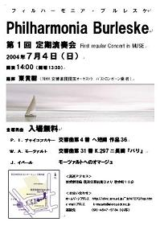

フィルハーモニア・ブルレスケ 第1回定期演奏会
2004年7月4日(日) 於：所沢市民文化センターMUSE アークホール
指揮：東貴樹
イベール モーツァルトへのオマージュ
モーツァルト 交響曲第31番『パリ』
チャイコフスキー 交響曲第4番
シューベルト 劇付随音楽『ロザムンデ』より「間奏曲」
曲目解説
イベール モーツァルトへのオマージュ
ジャック・イベールは1890年、フランスはパリに生を受け、20歳にして作曲活動を始めたという遅咲きの作曲家である。しかもローマ大賞を受賞し、注目を集め始めたのが29歳の時であることを考えると、10歳でオペラを作曲したモーツァルトとは対照的な作曲家であると言える。
彼の特徴としてよく挙げられるのが、色彩感豊かな管弦楽法である。代表作である『寄港地』や『フルート協奏曲』を聞けば、響きの重ね方のみならず、楽器自体の斬新な奏法を駆使して独特の響きを作り上げていることが判るだろう。『モーツァルトへのオマージュ』も古典的な2管編成を取るものの、引き出される響きはモーツァルトのそれとはだいぶ異なったものになっている。
ハイドンやモーツァルトなどの古典派へのオマージュ（尊敬を捧げる意味）的な楽曲を作っている作曲家は多く、有名なところではブラームスの『ハイドンの主題によるの変奏曲』や、プロコフィエフの『古典交響曲』などがある（本日のトリであるチャイコフスキーも、組曲『モーツァルティアーナ』という佳品を残している）。
イベールの本曲はそれらに比べ決して有名とは言えないが、平易な語り口と随所に散りばめられたエスプリ、独自の書法は熟練の境地に達しており、聴くものを飽きさせない。フィルハーモニア・ブルレスケはマイナーな名曲も取り上げていくことも創設目的のひとつとしているので、このような佳品を今後も取り上げていきたい。
モーツァルト 交響曲第31番『パリ』
一般的に「2管編成」というと、木管楽器の4パートがそれぞれ2人ずつ配置された編成のことを指す。この編成は古典音楽における基本形のように思われているフシがあるが、実は「古典」において、完全な2管編成が取られている交響曲というのは意外と少ない（オペラの序曲にはほとんど2管編成が使用されているものの）。ベートーヴェンは9曲の交響曲を作曲したが、2管編成はそのうち5曲に過ぎないし、モーツァルトに至っては41曲中、たった2曲だけである。そして、そのうちの1曲が本日演奏する交響曲第31番『パリ』にあたる。
この楽曲はモーツァルトが1778年にパリに滞在していた折り、作曲された。モーツァルトはパリの聴衆の好みを研究し、様々な計算のもとに作曲をし、大喝采を浴びたという。その計算のひとつに「2管編成」があることは間違いない。『パリ』はモーツァルトの曲の中でも飛び切り華やかなメロディーやリズムが用いられており、「大編成」の迫力が音楽の魅力を増しているからである。『パリ』がかのような「大編成」を取っているのは、派手で華やかなものを好むフランス人の気質と無関係ではあるまい……といったら、偏見だろうか。
第1楽章(Allegro assai)
オーケストラの全ての楽器が主音（D)をユニゾンで4回も繰り返すという、豪快な冒頭から音楽は始まる。弦・管ともに撥ねるようなパッセージが相次ぎ、音楽は快活に進んでゆく。フォルテになったかと思うとピアノの音楽が展開されたり、再び大音量に戻ったりと、音量が目まぐるしく変わるのがこの楽章の特徴である。また、同じようなフレーズでも強奏に飛び込むのが2小節ずれていたりと、随所に不意打ちが仕掛けられている。こうしたユーモラスな点に、初演の際は演奏中に拍手が巻き起こったといわれている。
第2楽章(Andante)
第1楽章の「大編成」とは異なり、この楽章では2ndフルート、クラリネット、トランペット、ティンパニを使用しない薄い編成の音楽になっている。第1楽章の華やかさは影を潜め、雪が降り積もっていくような暖かい響きにガラリと変わっていることに注目していただきたい。薄い編成ながらも、長調から短調への劇的な切り替えなどが頻繁に行われており、劇的な音楽になっている。
第3楽章(Allegro)
2ndヴァイオリンの細かいパッセージから始まるが、すぐに1stヴァイオリンが一筆書きのような伸びやかさで入ってくる。常に細かいリズムとおおらかなメロディーの対比が行われ、音楽が躍動していることが強く感じられる。モーツァルトのお家芸である「羽が生え、そのまま空を飛んでいきそうな」楽章であり、軽やかながらも優雅さを失わない辺りは流石である。終盤は金管が前面に登場し、華々しく幕を閉じる。
チャイコフスキー 交響曲第4番
この交響曲第４番は第６番『悲愴』や第５番と並んで、いわゆる後期三大交響曲の最初の作品であり、全世界で頻繁に演奏されている。作曲は１８７７年から１８７８年にかけて、歌劇「エフゲニ一・オネーギン」とほぼ並行して行われた、この年はチャイコフスキーが教え子のアントニーナ・ミリュコーヴァと生涯唯一の結婚をした年であるが、この結婚はチャイコフスキーが同性愛の性向があったことも災いし、数ヶ月ともたなかった。そんな精神的不安定な時期に作曲されたこの曲は、運命に翻弄される人間を表現したドラマティックな作品である。初演は、翌年モスクワにてルービンシュタイン指揮の下で行われた。
第1楽章（Andante sostenuto; Moderato con anima）
ソナタ形式。序奏部の４分の３拍子はけたたましいホルンとファゴットから始まる。この主題は「運命の動機」とか「宿命のテーマ」などと呼ばれる。序奏部から「人間の幸福を妨げる運命」（チャイコフスキー自身の説明による）のテーマが一貫して流れている。主部で８分の９拍子のワルツが見せ、また、執拗に人間に襲い掛かってくる。音楽は、第２主題のクラリネットのメロディの後で喜びの絶頂を迎えるが、すぐに下降して「運命の動機」が音楽を支配する。
第2楽章（Andantino in modo di canzona）
三部形式。チャイコフスキーはこの楽章について「仕事に疲れた人々が真夜中に、ただ一人で座っている時のような憂鬱な感情」と表現している。中間部のヘ長調では農民舞踊風の音楽が繰り広げられ、大きな盛り上がりを見せるが、常にどこか悲しげで憂鬱な雰囲気が全体を覆っており、すぐにもとのメランコリックなメロディに戻ってくる。木管楽器の下降・上昇音形は、寂しげな人間に対して容赦なく運命の厳しさを示し、最後はファゴットの第五音で静かに終わる。
第3楽章（Scherzo: Pizzicato ostinato）
この楽章の弦楽器はピチカートだけで演奏され大変珍しいものである。チャイコフスキーはこの楽章を「酔っ払ったときに感じるような気紛れな唐草模様」と表現しており、不安定で落ち着きのない旋律が次々と展開されていく。中間部はオーボエのＡの音を合図に、酔っ払った農民が歌っている様子が木管楽器によって表され、さらにはロシア舞曲風の音楽を演奏する軍楽隊の様子が金管楽器によって表現される。
第4楽章（Finale: Allegro con fuoco）
突然４／４拍子のｆｆの第１主題が登場し、第４楽章が幕を開ける。その後、ロシア民謡の旋律による第２主題があらわれ、再び第１主題が演奏される。さらに感情が一気に高まって、熱狂的な第３主題が高らかに演奏される。これら３つの主題が絡み合うようにして音楽が展開される。「生きる希望」を模索する中で再び「運命の動機」が襲ってくるが、最後は歓喜に浸って馬鹿騒ぎをする様を表しているようだ。
フライヤー
